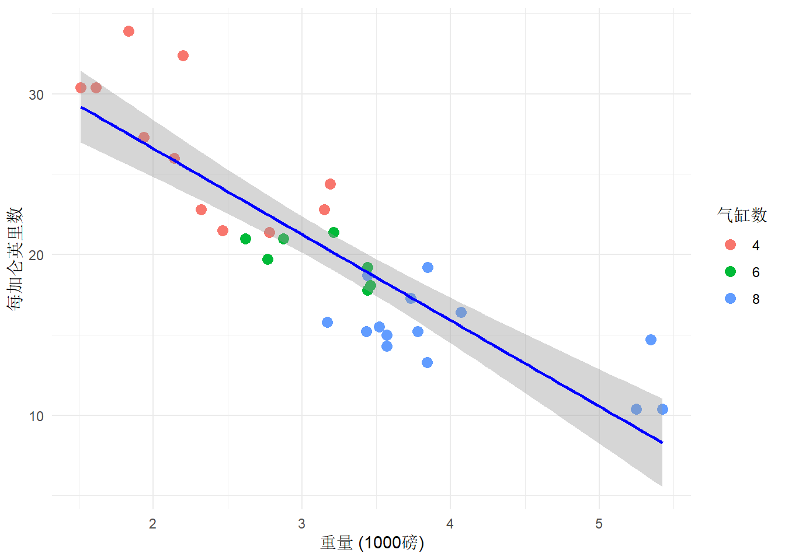
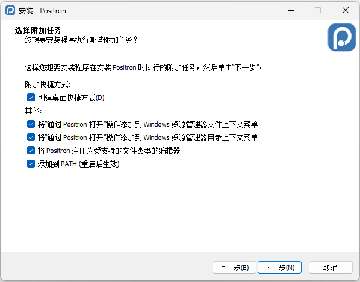

![]()

本指南提供了安装、配置和使用Positron、Quarto和Zotero进行定量学术研究论文写作的实用指导。
1 安装
本节将指导您安装和设置Positron、Quarto和Zotero，用于撰写定量学术研究论文。
1.1 安装R、Positron和Quarto
首先，我们需要下载并安装R、Positron和Quarto。
按照CRAN镜像上的说明下载并安装R。
按照Positron下载页面上的说明下载Positron。
运行安装程序并安装Positron。当被要求时，请勾选所有选项。

- 按照Quarto入门指南上的说明下载并安装Quarto。
1.2 设置系统环境变量
接下来，我们需要为代理设置系统环境变量。
打开Windows开始菜单并搜索
Env。点击
编辑系统环境变量。在系统属性窗口中，点击
环境变量按钮。在环境变量窗口中，在
系统变量部分下，点击新建按钮。在新建系统变量窗口中，输入
HTTP_PROXY作为变量名，http://127.0.0.1:xxxx作为变量值。点击确定。（将xxxx替换为您代理使用的端口号。）重复步骤5，创建另一个名为
HTTPS_PROXY的系统变量，值相同为http://127.0.0.1:xxxx。重复步骤5，创建另一个名为
NO_PROXY的系统变量，值为localhost,127.0.0.1。点击确定关闭环境变量窗口。点击确定关闭系统属性窗口。
1.3 加入Github教育计划
要使用Github Copilot，我们需要加入Github教育计划。
打开网络浏览器，访问GitHub Education。
点击
Join GitHub Education按钮。按照说明验证您的学生身份并完成申请过程。
1.4 更新Positron并设置Github Copilot Chat
现在，我们需要更新Positron并设置Github Copilot Chat。
打开Positron。
点击左下角的
管理图标。点击
设置打开设置选项卡。在设置选项卡中，搜索
channel，将releases切换为dailies。点击左下角的
管理齿轮图标。点击检查更新将Positron更新到最新版本。更新完成后，重启Positron。重复步骤2和3再次打开设置选项卡。
在设置选项卡中，搜索
assistant。勾选Enable Positron Assistant选项。点击左侧边栏的
聊天图标打开聊天选项卡。在聊天选项卡中，点击
添加模型提供商按钮。在配置语言模型提供商窗口中，选择
GitHub Copilot。点击登录。在GitHub登录页面中，输入您的GitHub凭据进行登录。
登录后，您将被重定向回Positron。现在您可以使用GitHub Copilot提供的大语言模型来协助您的编程工作。
1.5 安装R包管理器
接下来，我们需要安装R包管理器来管理R包。
打开Positron。点击左侧边栏的
扩展图标。搜索
Positron R Package Manager。点击安装来安装扩展。扩展安装并激活后，您可以在左侧边栏找到R包管理器📖图标。
将📖图标拖拽到右侧的辅助边栏中。
1.6 安装Zotero
最后，我们需要下载并安装Zotero来管理参考文献。
从Zotero下载页面下载适用于您操作系统的Zotero安装程序。
运行安装程序并按照屏幕上的说明完成安装。
打开Zotero，打开
编辑-设置，创建及登录一个帐户以同步您的参考文献，点击左上角新建分类在我的文库中新建一个分类，点击右边魔法棒图标将任意文献按doi添加到该分类。下载并解压Zotero Addons插件。
打开Zotero，点击顶部菜单栏的
工具，选择插件，点击齿轮，选择从文件安装插件，选择步骤3中下载的.xpi文件。选择
工具-插件市场，安装Better BibTex for Zotero插件以获得更好的BibTex支持。在文库中右键点击标题栏，勾选
引用以显示引用名称。选择
编辑-设置-Better BibTex，在引用格式公式中，保留auth.lower + year。右键点击想要导出的文献库，选择
导出分类，勾选保持更新，将文件命名为references.bib并保存到您的论文项目文件夹中。
2 使用方法
本节将指导您如何使用Positron、Quarto和Zotero撰写定量学术研究论文。
2.1 获取ORCID模板
现在，每次开始撰写新论文前，我们可以安装ORCID模板以获得更好的LaTeX格式。
打开Positron，创建一个qmd文件作为您的文稿。点击底部边栏的
终端。在终端中，输入以下命令并按回车：
quarto add kv9898/orcid。当询问是否信任作者并继续时，输入
Y。现在您可以使用ORCID模板工作。从这里复制并粘贴示例语法：ORCID模板。
点击顶部栏的
预览尝试编译文档。按照终端中的说明安装任何缺失的包。
2.2 YAML头部
您可以修改默认的YAML头部以满足您的需求。有关更多信息，请参考模板中代码的注释。
---
title: Orcid Template #更改文章标题
subtitle: with affiliation #更改文章副标题
date: last-modified #设置文章日期为最后修改时间，或者可以手动设置为具体日期，例如 '2024-06-01'
authors:
- name: Dianyi Yang #更改作者姓名
email: dianyi.yang@politics.ox.ac.uk #更改作者电子邮箱
orcid: 0009-0004-4652-3429 #更改作者ORCID
affiliations: #更改作者所属机构
- ref: ox #选择所属机构，必须与下面的affiliations部分中的id匹配
- ref: sec #选择所属机构，必须与下面的affiliations部分中的id匹配
corresponding: true #更改为通讯作者
equal-contributor: true #更改为并列贡献作者
- name: Yang Dianyi #可添加多位作者
orcid: 0009-0004-4652-3429
affiliations:
- ref: ox
- name: Someone else
affiliations:
- ref: ox
- ref: sec
orcid: 0009-0009-9108-5436
equal-contributor: true
affiliations: #设置所属机构
- id: ox #更改所属机构代号
name: Department of Politics and International Relations, University of Oxford
- id: sec #可设置多个所属机构
name: Second Institute
format: #选择编译格式
#native: default #编译为本地HTML格式
#docx: default #编译为Word格式
orcid-pdf: #编译为PDF格式
keep-tex: true #选择是否保留.tex文件，投稿期刊通常需要
number-sections: true #选择是否对章节编号
cover: false #选择是否包含封面，如果true，值为cover.pdf
toc: false #选择是否包含目录
toc-newpage: false #选择目录是否另起一页
bibliography: references.bib #设置参考文献文件
csl: extra/apa.csl #设置引用格式
abstract: This is an abstract. #修改摘要内容
keywords: a, b, c #修改关键词
acknowledgements: This is an acknowledgement. #修改致谢内容
---2.3 回归分析示例
以下是使用ORCID模板和mtcars数据集进行回归分析的示例，展示了撰写定量学术研究论文时的一些基本语法。
首先，让我们使用散点图检查汽车重量与燃油效率之间的关系。
点击顶部栏的”插入代码单元格”按钮插入r代码单元格，并将以下代码复制粘贴到代码单元格中：
# 为散点图分配标签以便交叉引用
# 图表标签应该有前缀"fig-"
#| label: fig-scatter
# 为散点图分配标题
#| fig-cap: "汽车重量与燃油效率的关系"
# 仅对图表输出设置echo、warning和message为false
#| echo: false
#| warning: false
#| message: false
# 安装必要的包
install.packages(c("ggplot2", "dplyr"))
# 如果包已安装，可以跳过上面的行
library(ggplot2)
library(dplyr)
# 创建描述性统计图表
ggplot(mtcars, aes(x = wt, y = mpg)) +
geom_point(aes(color = factor(cyl)), size = 3) +
geom_smooth(method = "lm", se = TRUE, color = "blue") +
labs(
x = "重量 (1000磅)",
y = "每加仑英里数",
color = "气缸数"
) +
theme_minimal()接下来，我们将进行回归分析。用LaTeX语法编写的方程应该用双美元符号$$ ... $$括起来，并使用{#label}分配标签以便交叉引用。
$$
mpg = \beta_0 + \beta_1 \cdot 重量 + \beta_2 \cdot 气缸数 + \epsilon
$$ {#eq-regression} #方程标签应该有前缀"eq-"\[ mpg = \beta_0 + \beta_1 \cdot 重量 + \beta_2 \cdot 气缸数 + \epsilon \tag{1}\]
我们也可以使用&来对齐方程。例如，如果我们希望方程在等号处对齐并作为一组引用，我们可以写：
$$
\begin{aligned}
1+2&=3\\
3+4&=7\\
11&=5+6
\end{aligned}
$$ {#eq-group}注意这里我们使用\begin{aligned} ... \end{aligned}来对齐一组方程，使用\\表示换行，使用&表示对齐点。
这三个方程现在作为一组引用并在等号处对齐：
\[ \begin{aligned} 1+2&=3\\ 3+4&=7\\ 11&=5+6 \end{aligned} \tag{2}\]
最后，让我们创建一个回归表来总结我们的回归结果。我们将使用modelsummary包来创建格式良好的回归表。
# 为回归表分配标签以便交叉引用
# 表格标签应该有前缀"tbl-"
#| label: tbl-regression
# 为回归表分配标题
#| tbl-cap: "回归结果：燃油效率模型"
# 仅对图表输出设置echo、warning和message为false
#| echo: false
#| warning: false
#| message: false
library(modelsummary)
# 拟合回归模型
model1 <- lm(mpg ~ wt, data = mtcars)
model2 <- lm(mpg ~ wt + cyl, data = mtcars)
model3 <- lm(mpg ~ wt + cyl + hp, data = mtcars)
# 创建回归表
modelsummary(
list("模型1" = model1, "模型2" = model2, "模型3" = model3),
stars = TRUE,
gof_map = c("nobs", "r.squared", "adj.r.squared")
)| 模型1 | 模型2 | 模型3 | |
|---|---|---|---|
| + p < 0.1, * p < 0.05, ** p < 0.01, *** p < 0.001 | |||
| (Intercept) | 37.285*** | 39.686*** | 38.752*** |
| (1.878) | (1.715) | (1.787) | |
| wt | -5.344*** | -3.191*** | -3.167*** |
| (0.559) | (0.757) | (0.741) | |
| cyl | -1.508** | -0.942+ | |
| (0.415) | (0.551) | ||
| hp | -0.018 | ||
| (0.012) | |||
| Num.Obs. | 32 | 32 | 32 |
| R2 | 0.753 | 0.830 | 0.843 |
| R2 Adj. | 0.745 | 0.819 | 0.826 |
方程、图表和表格会自动按正确顺序编号，并可以在文本中交叉引用。
要在Quarto中创建正确的交叉引用，请使用以下语法：在您想要进行交叉引用的地方使用@标签，其中标签是您分配给图表、表格或方程的标签。例如，@eq-regression引用回归方程 Equation 1，@eq-group引用方程组 Equation 2，@fig-scatter引用散点图 Figure 1，@tbl-regression引用回归表 Table 1。您可以参考Quarto交叉引用文档获取更多交叉引用信息。
2.4 文献综述示例
以下是使用Quarto进行文献引用的示例。
首先，确保您已经按照前面 Section 1.6 的说明将references.bib文件添加到您的项目中，并在YAML头部中正确设置了bibliography字段。
其次，确保您已经下载并添加了对应引用格式的*.csl文件，并在YAML头部中正确设置了csl字段。引用格式文件可以从CSL仓库下载。
现在，您可以在文本中使用@引用键来引用文献。我们可以将引用放在句首。例如：
@lake2011 Lake (2011) 认为国际关系研究中的“主义”之争是有害的。
或者，我们也可以将引用放在句末：
国际关系研究中的“主义”之争是有害的[@lake2011](Lake, 2011)。
如果要引用多个文章，可以使用逗号分隔引用键，例如：
这里有两篇好文章[@lake2011, @hale2020] (Hale, 2020; Lake, 2011)。
最后，在文档的末尾添加以下内容以生成参考文献列表：
# References {.unnumbered} #添加没有编号的参考文献部分
::: {#refs} #将参考文献放这个位置，而不是文档的末尾
:::References
Hale, T. (2020). Transnational Actors and Transnational Governance in Global Environmental Politics. Annual Review of Political Science, 23(1), 203–220. https://doi.org/10.1146/annurev-polisci-050718-032644
Lake, D. A. (2011). Why “isms” Are Evil: Theory, Epistemology, and Academic Sects as Impediments to Understanding and Progress1: Why “isms” are Evil. International Studies Quarterly, 55(2), 465–480. https://doi.org/10.1111/j.1468-2478.2011.00661.x
Reuse
Citation
BibTeX citation:
@online{fu2025,
author = {Fu, Yuxin and Yang, Dianyi},
title = {研究入门：现代定量社会科学家如何工作？},
date = {2025-09-27},
url = {https://bim382.github.io/blog/2025-09-27-Positron中文教程/},
langid = {en}
}
For attribution, please cite this work as:
Fu, Y., & Yang, D. (2025, September 27).
研究入门：现代定量社会科学家如何工作？. https://bim382.github.io/blog/2025-09-27-Positron中文教程/